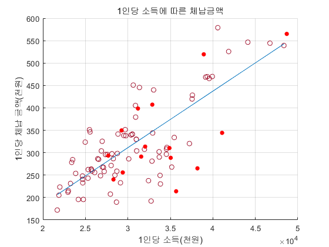
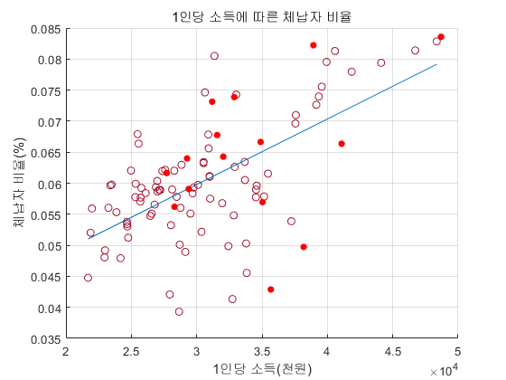
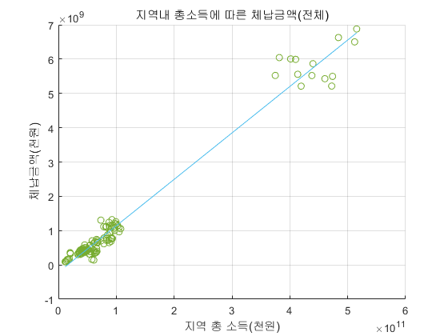
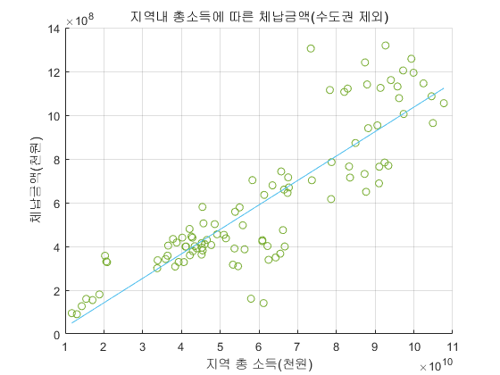
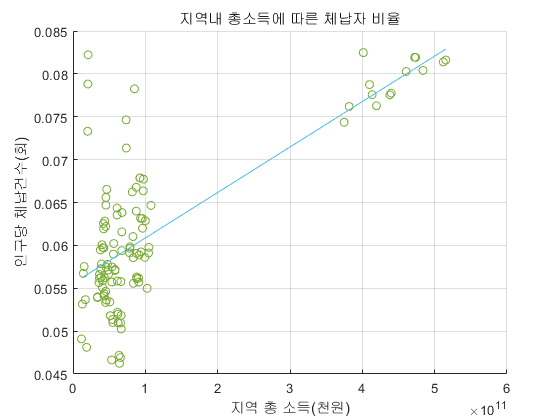
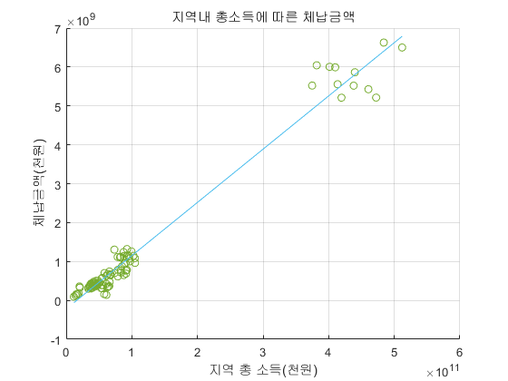
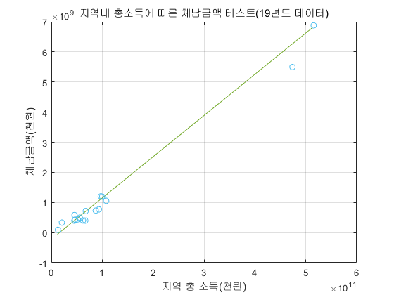

Contents
importdata linearReg.m;
format long;
데이터 가져오기
income = readmatrix("Data\1인당_지역총소득2013-2019.csv", "Range","B3:H19");
population = readmatrix("Data\인구수2013-2019.csv", "Range","B3:H19");
cases = readmatrix("Data\체납건수2013-2019.xlsx", "Range","D7:J23");
delinquent = readmatrix("Data\2.3.1_체납액_정리_실적Ⅰ_지역·세목_2006_20211115201948.xlsx", "Range","C4:I20");
income = income * 1;
delinquent = delinquent * 100000;
deliper1 = delinquent./population;
incomeall = income .* population;
delipers = cases./population;
데이터 정제
1: 서울 2: 부산 3: 대구 4: 인천 5: 광주 6: 대전
7: 울산 8: 세종 9: 경기 10: 강원 11: 충북 12: 충남
13: 북남 14: 전남 15: 경북 16: 경남 17: 제주
income_wo18 = income(:,1:6);
delipers_wo18= delipers(:,1:6);
deliper1_wo18 = deliper1(:,1:6);
income_wo18(17,:) = [];
income_wo18(7,:) = [];
delipers_wo18(17,:) = [];
delipers_wo18(7,:) = [];
deliper1_wo18(17,:) = [];
deliper1_wo18(7,:) = [];
data_wo18 = [income_wo18(:) delipers_wo18(:) deliper1_wo18(:)];
data_wo18 = rmmissing(data_wo18);
income_wo18v = data_wo18(:,1);
delipers_wo18v = data_wo18(:,2);
deliper1_wo18v = data_wo18(:,3);
income_19 = income(:,7);
delipers_19 = delipers(:,7);
deliper1_19 = deliper1(:,7);
income_19(17,:) = [];
income_19(7,:) = [];
delipers_19(17,:) = [];
delipers_19(7,:) = [];
deliper1_19(17,:) = [];
deliper1_19(7,:) = [];
data = [delinquent(:) deliper1(:) incomeall(:) delipers(:) income(:)];
data = rmmissing(data);
delinquent_v = data(:, 1);
deliper1_v = data(:,2);
incomeall_v = data(:,3);
delipers_v = data(:,4);
income_v = data(:,5);
incomeall_wo19 = incomeall;
delinquent_wo19 = delinquent;
incomeall_wo19(9,:) = [];
incomeall_wo19(1,:) = [];
delinquent_wo19(9,:) = [];
delinquent_wo19(1,:) = [];
data_wo19 = [incomeall_wo19(:) delinquent_wo19(:)];
data_wo19 = rmmissing(data_wo19);
incomeall_wo19v = data_wo19(:,1);
delinquent_wo19v = data_wo19(:,2);
incomeall_to18 = incomeall;
delinquent_to18 = delinquent;
incomeall_to18(:,7) = [];
delinquent_to18(:,7) = [];
data_to18 = [incomeall_to18(:) delinquent_to18(:)];
data_to18 = rmmissing(data_to18);
incomeall_to18v = data_to18(:,1);
delinquent_to18v = data_to18(:,2);
incomeall_test = incomeall(:,7);
delinquent_test = delinquent(:,7);
data_test = [incomeall_test(:) delinquent_test(:)];
data_test = rmmissing(data_test);
incomeall_testv = data_test(:,1);
delinquent_testv = data_test(:,2);
데이터 출력
for i = 1:0
if i == 8
continue
end
income_s = incomeall(i,:);
income_s = income_s(:);
deliper_s = deliper1(i, :);
deliper_s = deliper_s(:);
linearReg(income_s, deliper_s);
end
figure(1);
yy1 = smooth(income_wo18v, deliper1_wo18v);
linearReg(income_wo18v, yy1);
scatter(income_19,deliper1_19,30,"red","filled");
hold on
title("1인당 소득에 따른 체납금액");
xlabel('1인당 소득(천원)');
ylabel('1인당 체납 금액(천원)');
figure(2);
yy2 = smooth(income_wo18v, delipers_wo18v);
linearReg(income_wo18v,yy2);
scatter(income_19,delipers_19,30,"red","filled");
hold on
title("1인당 소득에 따른 체납자 비율");
xlabel('1인당 소득(천원)');
ylabel('체납자 비율(%)');
figure(3);
linearReg(incomeall_v, delinquent_v);
hold on
title("지역내 총소득에 따른 체납금액(전체)");
xlabel('지역 총 소득(천원)')
ylabel('체납금액(천원)')
figure(4);
linearReg(incomeall_wo19v, delinquent_wo19v);
hold on
title("지역내 총소득에 따른 체납금액(수도권 제외)");
xlabel('지역 총 소득(천원)')
ylabel('체납금액(천원)')
figure(5);
indeliy1 = smooth(incomeall_v, delipers_v);
linearReg(incomeall_v, indeliy1);
hold on
title("지역내 총소득에 따른 체납자 비율");
xlabel('지역 총 소득(천원)')
ylabel('인구당 체납건수(회)')
figure(6);
[indep_x, indep_y] = linearReg(incomeall_to18v, delinquent_to18v);
hold on
title("지역내 총소득에 따른 체납금액");
xlabel('지역 총 소득(천원)')
ylabel('체납금액(천원)')
figure(7);
plot(indep_x, indep_y);
hold on
grid on
scatter(incomeall_test, delinquent_test);
title("지역내 총소득에 따른 체납금액 테스트(19년도 데이터)");
xlabel('지역 총 소득(천원)')
ylabel('체납금액(천원)')
0.620736127399352
0.408854167904248
0.978062377972693
0.742150741093335
0.544279042207682
0.977186435472746
      